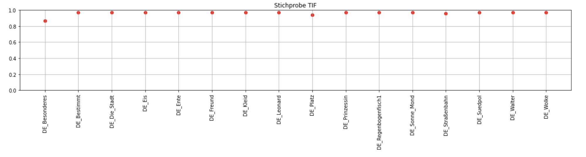

Optical Character Recognition mit besonderen Herausforderungen
1. Bilingualität
Optical Character Recognition (OCR) ist ein Teil der Document Image Analysis (DIA), die sich mit automatisierter Textverarbeitung auf gescannten Bilddokumenten beschäftigt.
1.1. zwei Sprachen, zwei Schriftsysteme
1.2. LTR vs RTL language
2. Illustrierte Seiten
2.1. page segmentation modes
2.2. Auswirkungen der Binarisierung
3. Accuracy

3.1. Vergleichszahlen
Script
4. OCR Arabisch
4.1. häufigste Fehlerquellen
5. Möglichkeiten durch Training und Preprocessing
6. Quellen
Quellen